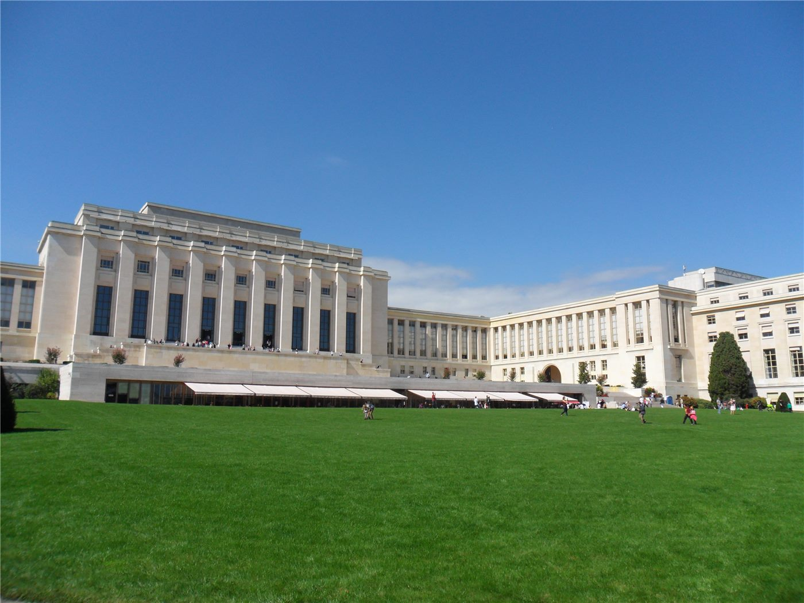

창어 6호 달 뒷면 시료, 빈 유엔 본부에 안치
달 뒷면에서 채취한 월면 시료 일부가 오스트리아 빈의 유엔 본부에 전시용으로 전달됐다. 인류가 처음 확보한 달 뒷면 표본이 국제기구에 놓인 사례다.
여년재 기자 · 2026.09.20
橋중국

창어 6호 탐사선이 달 뒷면에서 채취한 월면 시료 일부가 오스트리아 빈에 있는 유엔 사무소에 안치됐다고 전해졌다.
광고 문의 · 300×250창어 6호는 달 뒷면 남극-에이트켄 분지에서 시료를 채취해 지구로 가져온 임무다. 달 뒷면은 지구에서 직접 통신이 닿지 않아 중계 위성을 거쳐야 한다.
유엔 빈 사무소는 우주업무사무국이 있는 곳으로, 우주 활동의 평화적 이용에 관한 국제 논의가 이뤄지는 거점이다. 시료 전달은 이 맥락에서 이뤄졌다.
달 뒷면 시료는 앞면 시료와 화학 조성이 다를 가능성이 제기돼 왔다. 분석 결과는 달의 형성 초기 과정을 추정하는 자료로 쓰인다.
각국 연구기관에 대한 시료 분여 신청 절차는 별도로 운영되고 있다. 국제 공동 분석은 시료의 물리적 이동 없이 데이터를 공유하는 방식으로도 이뤄진다.